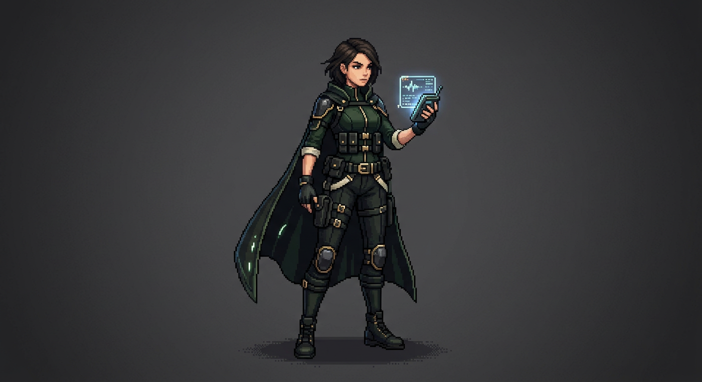

Your signal hunter. Scout is the agent you bring in when you're tired of drowning in noise and want someone whose job is to come back with signal, openings, and angles worth acting on.
Installed with: premium Reddit playbooks, 2026 YouTube content strategies, pattern recognition instincts, and a built-for-growth eye for what actually matters.
Scout is not a random chatbot.
Scout is a specialized growth intelligence agent built to hunt for signal across noisy environments and bring back what's actually worth your attention.
That means better raw material. Better timing. Better angles. Better moves.
It's the difference between asking a chatbot random questions and having a dedicated scout whose whole role is to scan the terrain before you move.
Scout comes in with a job and a lens. It's built to notice:
So instead of giving you bland summaries, Scout helps surface:
where attention is building
what people are frustrated by
what kind of content has real pull
what angle is getting crowded
where the actual opening is
Waits for you to know what you need.
Helps you figure out what matters before you even know the right question.
Gives answers.
Hunts.
Helps with prompts.
Helps with positioning.
Find better content angles
Track what your niche is actually talking about
Surface repeated pain points from real people
Identify trend shifts before they're stale
Gather stronger material for videos, posts, offers, and outreach
Stop wasting energy on weak inputs
Scout doesn't come empty.
You're not starting from zero. You're starting with an agent built around leverage.
Sharper awareness.
Less wandering. Less random scrolling. Less saving things you never use.
Less "I feel like there's something here but I can't lock onto it."
Scout shortens the distance between noise and clarity.
Scout is the one you send ahead.
Scout goes out into the noise, studies the terrain, and comes back with what matters. Not everything. Just the useful part.
Clear role. Clear edge. Clear value.
Scout can work as a standalone recruit. But it also acts as the front edge of a bigger system.
If Scout helps you see better and move better, the next step is obvious: build the rest of the team around that clarity through a full F02H setup.